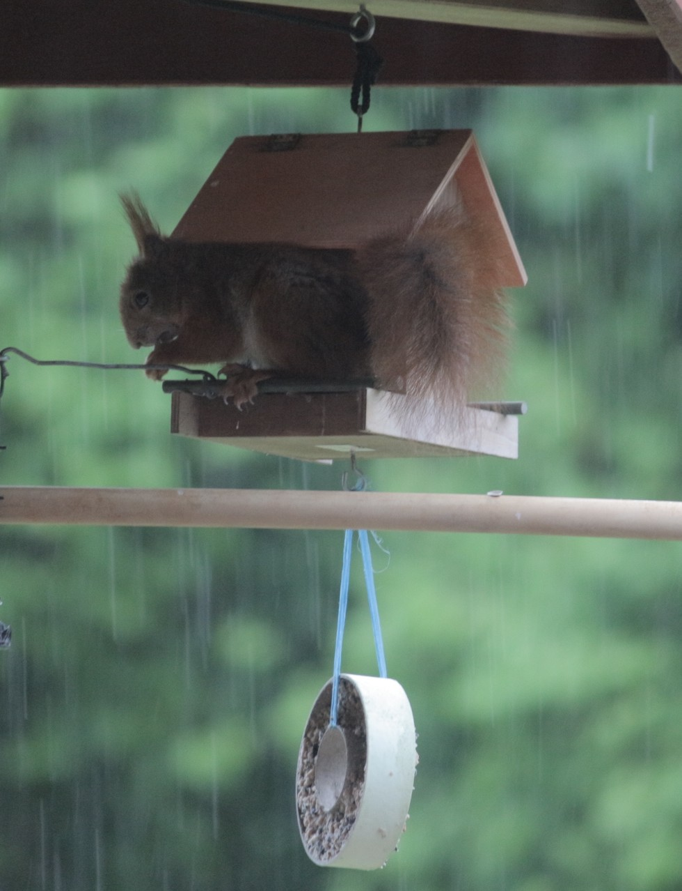
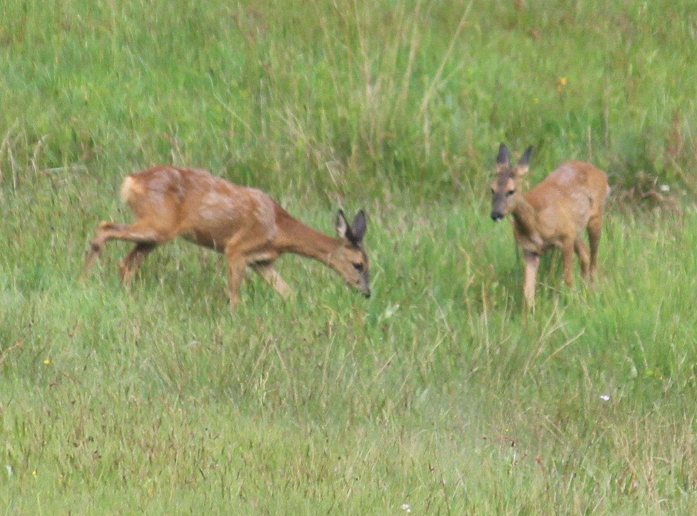

If you click on an image it will be zoomed up in the center of the viewport.
Only one popup at a time meaning when clicking on a different image zoom popup will be replaced.


Explanations
Clicking on a blue term will popup an explanation for that term. Multiple popups are possible.
Clicking on a popup will bring it to the top or pop it down if already on top.
There also is a nested explanation.
The template/section
tags
for the wrapper should be kept in one line back to back.
This avoids orphan text
DOM
elements when removing the popup from the DOM.
Each popup template must be a div containing just content or any
HTML
structure.
Formatting can be done with css classes or inline. The id’s of the wrapper tags should not be changed.
The id’s of the div’s will be helpful to identify the popup that will be used. Their naming is freely customizable.
iframe
Popup an iframe with the specified url using an instance of popupSet.
This popup therefor is not part of the popup family used in the examples zoom, explanations or feedback.
The reopen button will open the iframe in the state it was poped down
Feedback popup
The feedback popup will popdown after a specified time.
feedback popup called with the event object (event)
Click here.
feedback popup called with the element object (this)
Click here.
Other popups will pop down because eventpropagation can not be stopped.
logging
This is just a little helper when debugging on a mobile device without debug facility. Each pressing of the button will be logged.
For debugging anything can be logged. The log window will vanish by clicking on body.